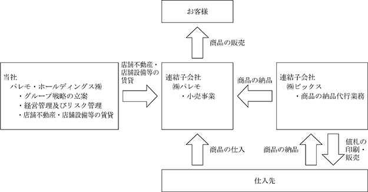

(注) １．第36期及び第37期の潜在株式調整後１株当たり当期純利益については、潜在株式は存在するものの１株当たり当期純損失であるため記載しておりません。
２．第36期及び第37期の自己資本利益率及び株価収益率については、親会社株主に帰属する当期純損失であるため記載しておりません。
３．従業員数は期末正社員就業人員数であり、( )内に臨時雇用者として嘱託社員及び１日８時間換算のパートタイマーを外書で記載しております。なお、嘱託社員及びパートタイマーは期中平均在籍人員を記載しております。
４．「収益認識に関する会計基準」（企業会計基準第29号 2020年３月31日）等を第38期の期首から適用しており、第38期以降に係る主要な経営指標等については、当該会計基準等を適用した後の指標等となっております。
(注) １．第37期の潜在株式調整後１株当たり当期純利益については、潜在株式は存在するものの１株当たり当期純損失であるため記載しておりません。
２．第37期の自己資本利益率及び株価収益率については、当期純損失であるため記載しておりません。
３．従業員数は期末正社員就業人員数であり、( )内に臨時雇用者として嘱託社員及び１日８時間換算のパートタイマーを外書で記載しております。なお、嘱託社員及びパートタイマーは期中平均在籍人員を記載しております。
４．最高株価及び最低株価は、2022年４月３日以前は東京証券取引所第二部におけるものであり、2022年４月４日以降は東京証券取引所スタンダード市場におけるものであります。なお、Ａ種優先株式は非上場株式であるため、株主総利回り、最高株価及び最低株価は記載しておりません。
５．「収益認識に関する会計基準」（企業会計基準第29号 2020年３月31日）等を第38期の期首から適用しており、第38期以降に係る主要な経営指標等については、当該会計基準等を適用した後の指標等となっております。
当社の前身は、1981年２月にユニー株式会社運営本部内に発足いたしました「SSギャルフィット部」であります。同年６月には、「ギャルフィット太田川店」を１号店として開店し、営業を開始いたしました。以降、ユニー株式会社のショッピングセンター内に「ギャルフィット」「ファナー」「ライムストーン」のショップ名で出店を続け、1982年１月には「ギャルフィット事業部」として事業部体制を整え、出店エリアも関東、静岡、北陸へと拡大いたしました。1984年11月にはユニー株式会社より分社化し、株式会社パレモの設立に至りました。
沿革につきましては次のとおりであります。
当社グループ（当社及び当社の関係会社）は、純粋持株会社である当社、連結子会社２社で構成され、衣料品及び雑貨を直接消費者に販売する専門店をチェーン展開することを主要な業務としております。
当社グループの事業にかかる位置づけ及びセグメントとの関連は、次のとおりであります。
なお、当社は、有価証券の取引等の規則に関する内閣府令第49条第２項に規定する特定上場会社等に該当しており、これにより、インサイダー取引規則の重要事実の軽微基準については連結ベースの数値に基づいて判断することとなります。
当社グループの報告セグメントは、従来「店舗小売事業」及び「ＦＣ事業」の２つを報告しておりましたが、当連結会計年度より、「小売事業」として単一のセグメントに変更しております。
(1) 小売事業
小売事業は、レディースアパレル商品や雑貨を販売するために、複数のブランドを設け、全国のショッピングセンターでチェーン展開しております。
① レディースアパレルのブランド
10代後半から40代の女性をメイン顧客層とした婦人洋品・婦人服・服飾雑貨をトータル展開しております。
・「NOEMIE」・・量産型・地雷系ファッションに特化したEC発のZ世代向けアパレルブランド。
・「Ludic Park」・・遊び心を程よく取り入れた自分らしいファッションを楽しくセレクトできるショップです。 エレガンス・クール・カジュアルまで幅広い客層へ向けた最新トレンドと着まわしのきくベーシックアイテムをお手頃プライスで提案します。
・「Lilou de chouchou」・・いつまでもかわいく輝いていたい女性に向けて、毎日のHAPPYを演出します。エレガンスをベースに程よくトレンドを織り交ぜながらON&OFFあらゆるシーンも自分らしく楽しめる上品で女性らしいファッションを提案します。
・「DAISY MERRY」・・大人の心と少女の心を持ち合わせたいくつになっても可愛くオシャレでいたい女性に向けて可愛いだけでなく、どこかボーイッシュ、ほんのりガーリーと、遊び心を取り入れた今欲しいリアルクローズを手頃なプライスで提案します。
・「RecHerie」・・「フェミニン」をキーワードに、ベーシックでリラックス感のある大人のカジュアルスタイルを提案します。
・「FOREST HEART」・・ファッションを楽しみたい大人の女性に、スタイリッシュなリラックスカジュアルを提案します。
・「DOSCH」・・「クール」をキーワードに、流行に敏感な女性に向けて最新のトレンドファッションを提案します。
・「木糸土」・・木・糸・土の素材を活かし、「無理なく、無駄なく」をコンセプトに、シンプルで飽きのこない生活雑貨を提案します。
・「Hare no hi」・・「ナチュラルライフ」をテーマに、アパレル、雑貨をトータルにコーディネイト。ライフスタイルを提案します。
・「GAL FIT」・・「フェミニン＆クール」をテーマに、リラックス感のあるカジュアルスタイルとエッジの効いたモードスタイルを提案します。
・「suzutan」・・「エレガンシー＆フェミニン」をテーマに、幅広い客層へ最新トレンドと着まわしのきくベーシックアイテムを提案します。
・「Re-J」・・「デイリー＆リラックス」をテーマに、ベーシックアイテムとシーズントレンドを程よくＭＩＸした”大人カジュアル”を提案するラージサイズＳＨＯＰであります。
・「SUPURE」・・「フェミニン＆カジュアル」をテーマに、上品さと着心地を大切にしたラージサイズＳＨＯＰであります。
② 雑貨のブランド
幅広い年齢層の女性を主な顧客とした、生活雑貨、バッグ及び服飾雑貨を展開しております。
・「illusie300」・・「日常に彩り」をテーマに、300円のプチプライスでライフスタイルを提案します。
・「INCENSE」・・「MYBAGを探す楽しさや、見つけた時の喜びを共有できるBAG SHOP」。自分のスタイルを確立した大人の男女に、「オンリーワン」のバッグを提案します。
③ ＦＣ事業
株式会社バロックジャパンリミテッドが有する「Azul by moussy」ブランドの商品販売に関してフランチャイズ契約し、店舗展開しております。
④ ＥＣ事業
インターネットでの商品販売を行い、自社ＥＣサイトである「パレモバ」を展開しております。
(2) その他
子会社の株式会社ビックスの商品の納品代行業務であります。
事業の系統図は次のとおりであります。

(注）１．特定子会社に該当しております。
２．株式会社パレモについては、売上高（連結会社相互間の内部売上高を除く）の連結売上高に占める割合が10%を超えております。
３．債務超過会社であり、2024年２月20日時点で債務超過額3,029,252千円となっております。
2024年２月20日現在
(注) １．従業員数は就業人員数であります。
２．従業員数欄（外書）は嘱託社員及びパートタイマーの年間平均雇用人数(１日８時間換算)であり、最近１年間の平均在籍人員であります。
2024年２月20日現在
(注) １．従業員数は就業人員数であります。
２．平均年間給与は、賞与及び基準外賃金を含んでおります。
３．従業員数欄の( )内は外書で嘱託社員６名及びパートタイマー３名(１日８時間換算)であり、最近１年間の平均在籍人員であります。
当社グループの労働組合は、ＵＡゼンセン愛知県支部の一支部として2017年５月31日パレモ労働組合が結成されました。
なお、労使関係は円滑に推移しており、特記すべき事項はありません。
(注) １．「女性の職業生活における活躍の推進に関する法律」(平成27年法律第64号)の規定に基づき算出したものであります。
２．「育児休業、介護休業等育児又は家族介護を行う労働者の福祉に関する法律」(平成３年法律第76号)の規定に基づき、「育児休業、介護休業等育児又は家族介護を行う労働者の福祉に関する法律施行規則」(平成３年労働省令第25号)第71条の４第１号における育児休業等の取得割合を算出したものであります。